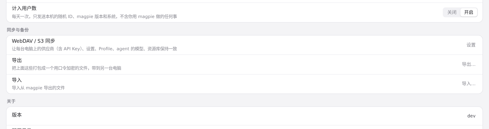
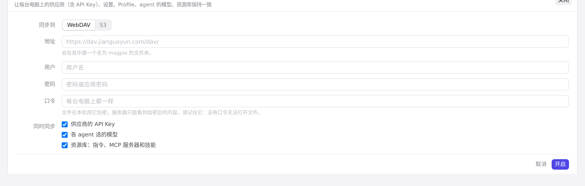
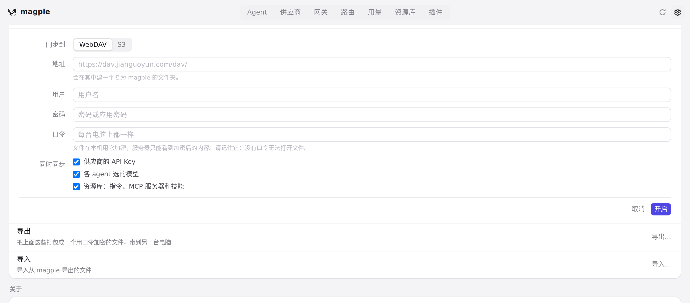

#307 界面预览
commit 4b58969 · 回到 PR · 设置页「WebDAV / S3 同步」一行关闭状态的说明文字不再写死，而是按视图里的 keys/agents/library 开关拼出（默认三者都开，所以文字变成「供应商（含 API Key）、设置、Profile、agent 的模型、资源库」）；同时设置页每次重绘（返回设置页、窗口重新获得焦点）都会重新读取 WebDAV 配置，而不是继续用启动时读到的那份。
红线是鼠标走过的轨迹，红色圆环是一次点击；底部文字是这一步在做什么。空格暂停，← → 逐段查看。

设置页的 WebDAV / S3 同步行 · 关闭状态下「WebDAV / S3 同步」一行的说明文字

设置页的 WebDAV / S3 同步行 · 同步表单里的勾选项

离开再回到设置页 · 返回设置页后重新绘制的同步行